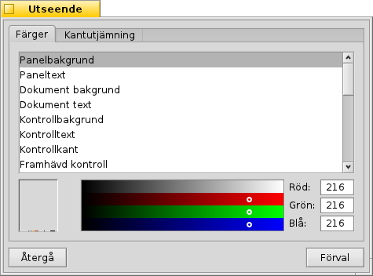
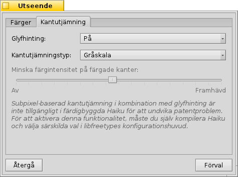
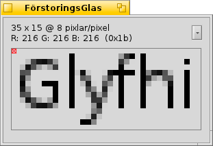
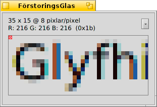
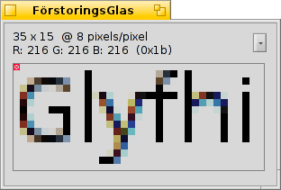

Svenska
Svenska Català
Català Deutsch
Deutsch English
English Español
Español Français
Français Italiano
Italiano Magyar
Magyar Polski
Polski Português
Português Português (Brazil)
Português (Brazil) Română
Română Slovenčina
Slovenčina Suomi
Suomi 中文 ［中文］
中文 ［中文］ Русский
Русский Українська
Українська 日本語
日本語 Utseende
Utseende
| Deskbar: | ||
| Location: | /boot/system/preferences/Utseende | |
| Settings: | ~/config/settings/system/app_server/appearance ~/config/settings/system/app_server/fonts |
Inställningarna i Utseende låter dig justera några aspekter av Haikus utseende.
 Fonts
Fonts

Haiku defines three standard fonts for different purposes. You set plain, bold and fixed font types and sizes that will be used throughout the system. Besides these, there's also a separate setting for the font used in menus.
Installing new fonts
New fonts that don't come as part of a regular .hpkg package, can be installed by copying them into a subfolder according to the font type (psfonts or ttfonts) into their respective non-packaged folder (see topic Filesystem layout). For TrueType fonts that would be:
| /boot/system/non-packaged/data/fonts/ttfonts/ | for fonts available to every user. | |
| /boot/home/config/non-packaged/data/fonts/ttfonts/ | for fonts only available to yourself. |
Färger

In the tab, you can change the colors of different parts of the user interface. The color well accepts drag&drops from other programs, letting you drag colors over from e.g. WonderBrush, Icon-O-Matic or the Backgrounds panel.
Window decorators

Decorators determine the look and feel of windows and all GUI elements. Currently Haiku comes with only one default decorator. Should you find and install other decorators, you can choose a different one from the pop-up menu.
Haiku's default decorator lets you set the arrow style of the scroll bar: either single arrows at the end of scrollbars to conserve a bit of space, or double arrows — the traditional BeOS way — potentially saving some mouse moving when scrolling up and down or left and right...
Kantutjämning

The tab provides different settings for how things are rendered on screen.
Betoning
När är aktiverad justeras alla bokstäver så att deras vertikala och horisontella kanter ligger exakt mellan två pixlar. Resultatet är perfekt kontrast, särkillt när det handlar om svart på vitt. Text ser ut att ha skarpare kanter. Det finns också en inställning kallad . Det är särskilt användbart på lågupplösta enheter som exempelvis netbooks. Små typsnitt kan vara svårlästa med betoning påslaget, men med denna inställning har du fortfarande fördelen av hintning i textredigerare och i Terminalen.
De förstorade skärmbilderna här under visar hur hintning påverkar text:
 Betoning av. |  Betoning på. |
Notera att alla bilder av programmet FörstoringsGlas självklart också själva är renderade med de olika valen. Du ser alltså hur inställningarna ser ut i praktiken om du jämför t.ex. titeln i den gula fliken, eller texten "33 x 15 @ 8 pixels/pixel".
Kantutjämningstyp
En annan teknik som förbättrar återgivningen är Kantutjämning, som förutom text även stödjer all vektorgrafik. Den mjukar upp kanter genom att justera färgen på vissa pixlar. Det finns två sätt att göra det:
justerar ljusstyrkan på pixlar vid kanten.
gör ett ännu bättre jobb, särskilt på (högupplösta) LCD-skärmar. Istället för ljusstyrkan justeras pixelns färg, vilket flyttar kanten en bråkdel av en pixel. Det fungerar eftersom varje pixel på en LCD-skärmar har en röd, en grön och en blå yta.
En jämförelse av de två metoderna med förstorade skärmbilder:
Gråskala med betoning av. |  LCD subpixel med betoning av. |
Subpixelbaserad kantutjämning ger en något färgad glöd runt texten, något inte alla tolererar. I Haiku kan du blanda de två kantutjämningsmetoderna och hitta den kombination som passar dig bäst genom att använda ett reglage.
Såhär ser betoning med LCD subpixelbaserad rendering ut (om du aktiverar det genom att ändra i källkoden och kompilera om), jämfört med betoning och gråskala).
Gråskala med betoning på. |  LCD subpixel med betoning på. |
Längst ner i panelen finns två knappar:
| återställer allt till standardinställningarna. | ||
| ställer tillbaka inställningarna som de var när du startade Utseende. |